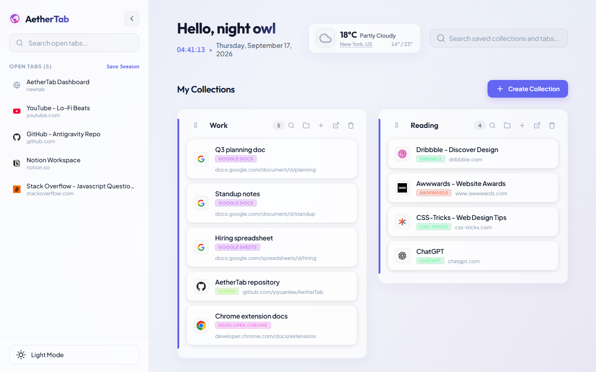

Put a project away.
Save the current window as a session, or drag individual tabs into a collection. Saved tabs close to clear your window.
The official AetherTab website
A Chrome new tab extension for managing tabs and bookmarks. Save sessions, import your bookmarks, and keep every project in its own collection.
Free & open source · No account needed

A place for every project
Research rabbit holes. A week’s worth of reading.
Keep the useful pages. Let the rest of your browser breathe.
Save the current window as a session, or drag individual tabs into a collection. Saved tabs close to clear your window.
Keep pages together by project. Group links from the same site and search inside a collection when it grows.
Open a new tab to find your collections. Reopen one page or restore the whole collection when you’re ready.
From open tabs to saved ideas
See how a tab moves from the sidebar into a collection, so you can close it without losing it.
Actual AetherTab demo · Play to watchMake yourself at home
Your collections live in this browser’s Chrome storage. Turn on optional Chrome Sync if you want them across devices.
How your data is handled ↗Import Chrome bookmarks, Toby exports, HTML or JSON. Review your links before saving.
Moving from Toby? ↗Share a code or direct link. Someone else can import the collection into their own AetherTab.
Meet the developer
Yiyuan Li · Creator of AetherTab
I’m the developer behind AetherTab. I enjoy solving problems through code and learning by building things people can use.
AetherTab brings that work to your new tab: a place to save your tabs, organize your links, and return to a project. It’s open source, so you can explore the code and follow its development on GitHub.
Before you open a new tab
AetherTab is a free, open-source Chrome extension that replaces your new tab page with a workspace for saved tabs and bookmarks. Use collections to keep research, reading, and projects together.
Install AetherTab from the Chrome Web Store, then open a new tab. Create a collection and drag an open tab into it, or use Save Session to save the current window.
Yes. Import Chrome bookmarks directly, or choose a browser HTML export or a Toby JSON/TXT export. Review the import before saving. Toby notes and tags are not imported. Read the Toby import guide.
No separate AetherTab account is needed. Collections are stored in Chrome storage, and bookmark organization runs on your device. Optional Chrome Sync uses your signed-in Chrome profile. Read the privacy policy.
Use a collection’s share control to export a share code or JSON file. For help, bugs, or feature suggestions, visit the official GitHub repository.
A fresh start, every new tab
Free. Open source. Yours.